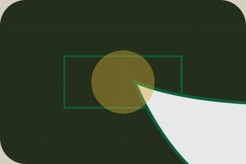

JournalMaisonVale journal
Primary-reference resource rhythm for resources decisions in home.
Open resource
JournalPrimary-reference resource rhythm for resources decisions in home.
Open resourcePrimary-reference resource rhythm for resources decisions in home.
Open resourcePrimary-reference resource rhythm for resources decisions in home.
Open resource